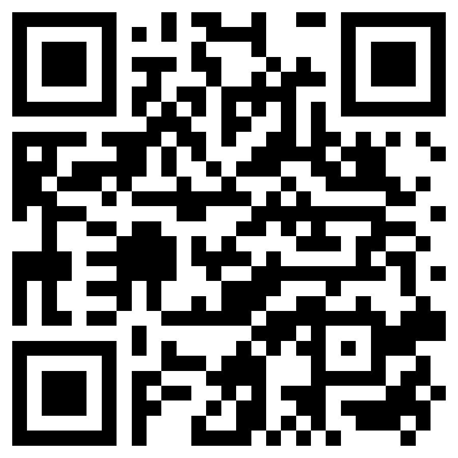

Validación de equipo de protección personal
Detección de personas y reglas de casco, chaleco, lentes, guantes o protección auditiva con evidencia para auditoría.
Soluciones comerciales para detectar riesgos, evidenciar eventos, activar alertas y mejorar la visibilidad preventiva en operación industrial.

Detección de personas y reglas de casco, chaleco, lentes, guantes o protección auditiva con evidencia para auditoría.
Alertas por correo, dashboard, API o sistema interno cuando se detecta una condición crítica.
Áreas virtuales sobre video para detectar presencia, cruce de línea o ingreso no autorizado.
Clasificación visual de posiciones de rack para identificar ocupación, faltantes y diferencias contra inventario esperado.
Registro de permanencia o repetición de posturas que ameritan alerta preventiva y revisión ergonómica.
Apoyo al monitoreo de actividad inusual, manipulación irregular, permanencia y zonas sensibles.
Somos distribuidores de PiPHOTONICS para soluciones de luces de seguridad en planta. Integramos señalización luminosa para advertir riesgos antes de que ocurra el incidente.

Las luces complementan la IA visual al hacer el riesgo evidente para operadores, peatones y supervisores.
CCTV, RTSP, cámara IP, video existente o cámara industrial nueva instalada para el proyecto.
EPP, postura, zona, cruce, permanencia, racks, actividad inusual o regla específica del cliente.
Umbrales, tiempo de permanencia, repetición, prioridad y evidencia para reducir ruido operativo.
Correo, dashboard, bitácora, API o integración con sistemas internos.

Escanea el QR para abrir el sitio público con demos de seguridad con IA, luces de seguridad PiPHOTONICS, casos de uso y contacto.
https://interdato.github.io/Deteccion-CamarasIA/